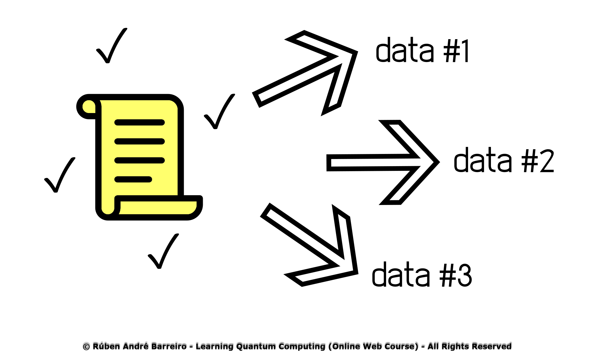
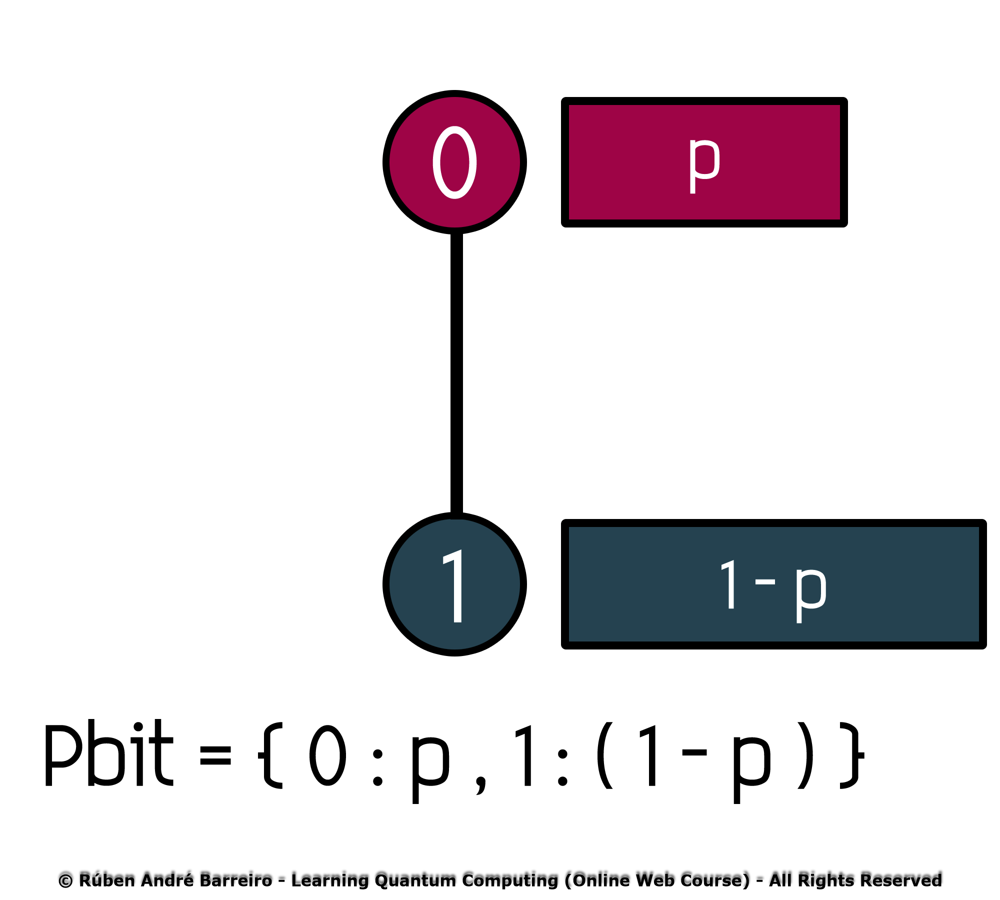
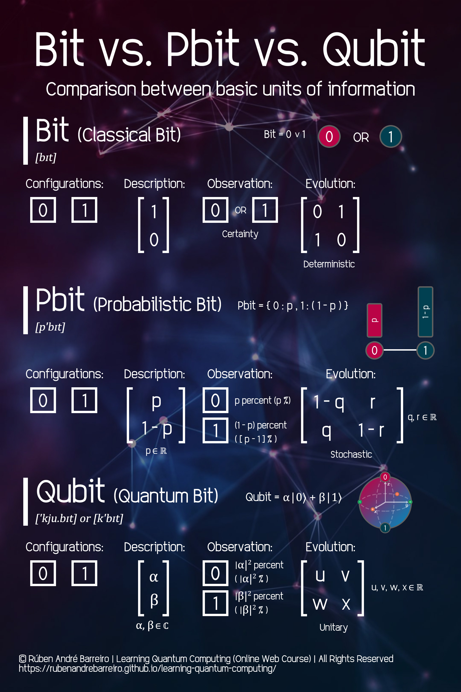

- What is the Concept of Information?
- What is an Unit of Information?
- What is an Unit of Measurement?
- What is Data?
- What is Knowledge?
- Classical Information
- Classical Units of Information
- What is a Bit?
- Classical Data Storage
- Practical Examples of Used Sizes of Units of Classical Information
- Classical Information Theory
- Quantum Information
- Quantum Units of Information
- What is a Qubit?
- Quantum Data Storage
- Bit vs. Pbit vs. Qubit - Comparison Between Some Basic Units of Information
- Bloch Sphere
- Quantum Information Theory
- Proposed Exercises
- This week will contain theoretical lectures and practical exercises
-

- This work is licensed under a Creative Commons Attribution-NonCommercial-NoDerivatives 4.0 International License.

üìç Select a topic:
⚠️ Notes:
©️ License:
Understanding the Quantum Information (Week 5)
Core 1 - Introduction to Quantum
Rúben André Barreiro
What is the Concept of Information?
-
The Information can be thought of as the resolution of uncertainty.

-
The Information it's always associated with data.

-
The Information is data, in some given context and meaning attached.
-
The Information relates also to knowledge.
-
In terms of Communication, Information is expressed either as the content of a message, or even, through direct or indirect observation.
-
The Information can be encoded into several forms for interpretation and transmission (for example, interpreted by a sequence of signs,
or transmitted via a signal). -
The concept of Information has different meanings in different contexts.
-
Thus, the concept of Information becomes related to notions of constraint, communication, control, data, form, education, knowledge,
meaning, understanding, mental stimulation, pattern, perception, representation and entropy.
What is an Unit of Information?
-
An Unit of Information is the capacity of some standard data storage system or communication channel,
used to measure the capacities of other systems and channels. -
The Units of Information can be also used to measure the entropy of random variables and information contained in messages.
What is an Unit of Measurement?
-
An Unit of Measurement is a magnitude of a quantity, defined and adopted by convention or by law, that's used as a standard for measurement of the same kind of quantity.
-
Any other quantity of that kind can be expressed as a multiple of the unit of measurement. Per example:
- 1 Byte = 8 Bits;
- 1 Gigabyte = 1,073,741,824 ;
- 1 Gigabyte = 1,024 Megabytes;
- 10 Kilometer = 10.0 $ \times $ 103 Meters = 10,000 Meters;
- 1 Nanometer = 1.0 $ \times $ 10-9 Meters = 0.000,000,001 Meters;
- 1 Decileter = 1.0 $ \times $ 10 -1 = 0.1 Liters;
- 1 Watt = 1 Joule/Second;
- 1 Kilowatt = 1.0 $ \times $ 103 Watts = 1,000 Watts;
- 1 Minute = 60 Seconds;
- 2 Hours = 2.0 $ \times $ 60 $ \times $ 60 Seconds = 2.0 $ \times $ 602 Seconds = 7,200 Seconds;
What is Data?
-
The Data (or singular datum) are individual units of information.
-
The Data describes a single quality or quantity of some object or phenomenon.
-
The Data represents values attributed to parameters (i.e., parameter → value).
-
In analytical processes, data are represented by variables.
-
Although, the terms "data", "information" and "knowledge" are often used interchangeably, each of these terms has a distinct meaning.
-
In popular publications, data is sometimes said to be transformed into information when it's viewed in context or in post-analysis.
-
The Data is measured, collected and reported, and analyzed, whereupon it can be visualized using graphs, images or other analysis tools.
-
The Data, as a general concept, refers to the fact that some existing information or knowledge is represented or coded in some form suitable
for better usage or processing. -
The Data can also be Raw Data ("unprocessed data"), which is a collection of numbers or characters before it has been "cleaned" and
corrected by researchers. -
The Data processing commonly occurs by stages, and the "processed data" from one stage maymay be considered the "Raw Data" of the next stage.
-
The Data can, even, be of Experimental type, which is the data that is generated within the context of a scientific investigation by observation and recording.
What is Knowledge?
-
The knowledge signifies understanding of an abstract or concrete concept.
-
Classical Information
Classical Units of Information
What is a Bit?
Classical Data Storage
Practical Examples of Used Sizes of Units of Classical Information
Classical Information Theory
Quantum Information
Quantum Units of Information
What is a Qubit?
Quantum Data Storage
Bit vs. Pbit vs. Qubit - Comparison Between Some Basic Units of Information
-
Bit (Classical Bit) [bit]:

-
Basic Unit of Classical Information
-
Capable of existing in just one state only, 0 or 1, at a different time;
-
1D Point in only one of the two states/points (0 and 1);
-
Determistic state;
-
n bits = n states;
-
Formula:
\begin{aligned}[left*] Bit &= \{ \ 0 \ ∨ \ 1 \ \}\hspace{400ex} \end{aligned} -
Other Properties:
\begin{aligned} Configurations &= \begin{array}{|l|} \hline 0\\ \hline \end{array} \hspace{1ex} \begin{array}{|l|} \hline 1\\ \hline \end{array}, \\ \\ Description &= \begin{bmatrix} 1 \\ 0 \end{bmatrix}, \\ \\ Observation &= \begin{array}{|l|} \hline 0\\ \hline \end{array} \hspace{1ex} OR \hspace{1ex} \begin{array}{|l|} \hline 1\\ \hline \end{array}\hspace{1ex}(Certainty), \\ \\ Evolution &= \begin{bmatrix} 0 & 1 \\ 1 & 0 \end{bmatrix}\hspace{0.5ex}(Deterministic).\hspace{400ex} \end{aligned}
-
-
Pbit (Probabilistic Bit) [p'bit]:

-
Uses the Bit (Basic Unit of Classical Information), as his basis, in a random fashion;
-
Capable of existing in just one state only, 0 or 1, at a different time;
-
2D Line between only one of the two states/points (0 and 1);
-
Non-Determistic/Probabilistic state;
-
n pbits = n states;
-
Formula:
\begin{aligned}[left*] Pbit &= \{ \ 0 \ : \ p \ , \ 1 \ : \ ( \ 1 \ - \ p \ ) \ \}\hspace{400ex} \end{aligned} -
Other Properties:
\begin{aligned}[left*] Configurations &= \begin{array}{|l|} \hline 0\\ \hline \end{array} \hspace{1ex} \begin{array}{|l|} \hline 1\\ \hline \end{array}, \\ \\ Description &= \begin{bmatrix} p \\ 1 - p \end{bmatrix}\hspace{0.5ex}( \ p \in \mathbb{R} \ ), \\ \\ Observation &= \begin{array}{|l|} \hline 0\\ \hline \end{array} \hspace{0.8ex}(p \ \%) \hspace{1ex} OR \hspace{1.4ex} \begin{array}{|l|} \hline 1\\ \hline \end{array} \hspace{0.8ex}( \ [ \ 1 \ - \ p \ ] \ \% \ ), \\ \\ Evolution &= \begin{bmatrix} 1 - q & r \\ q & 1 - r \end{bmatrix}\hspace{0.5ex}( \ q,\ r \in \mathbb{R} \ )\hspace{0.5ex}(Stochastic). \hspace{400ex} \end{aligned}
-
-
Qubit (Quantum Bit) ['kju.bit] or [k'bit]:

-
Basic Unit of Quantum Information;
-
Capable of existing in infinite states, before the Quantum Measurement be performed:
- $ \left| 0 \right> $ (Classical Basis/State 0);
- $ \left| 1 \right> $ (Classical Basis/State 1);
- $ α\left| 0 \right> + β\left| 1 \right> $ (Any combination (or, infinite combinations) of $ \left| 0 \right> $ and $ \left| 1 \right> $ occurring simultaneously, in a Quantum Superposition of States);
-
Capable of existing in only two states, after the Quantum Measurement be performed:
- $ 0 $ (Classical State 0);
- $ 1 $ (Classical State 1);
-
3D Sphere (usually represented by a Bloch Sphere) with $ \left| 0 \right> $ and $ \left| 1 \right> $ at the poles and an infinite number of superpositions as states points on the Bloch Sphere;
-
Non-Determistic/Probabilistic states;
-
Before the Quantum Measurement of States be performed:
- n qubits = 2n processed states;
-
After the Quantum Measurement of States be performed:
- n qubits = n measured states;
-
Formula:
\begin{aligned}[left*] Qubit &= α\left| 0 \right> + β\left| 1 \right>\hspace{400ex} \end{aligned} -
Other Properties:
\begin{aligned}[left*] Configurations &= \begin{array}{|l|} \hline 0\\ \hline \end{array} \hspace{1ex} \begin{array}{|l|} \hline 1\\ \hline \end{array}, \\ \\ Description &= \begin{bmatrix} α \\ β \end{bmatrix}\hspace{0.5ex}( \ α,\ β \in \mathbb{C} \ ), \\ \\ Observation &= \begin{array}{|l|} \hline 0\\ \hline \end{array} \hspace{0.8ex}( \ |α|^2 \ \% \ ) \hspace{1ex} AND \hspace{1.4ex} \begin{array}{|l|} \hline 1\\ \hline \end{array} \hspace{0.8ex}( \ |β|^2 \ \% \ ), \\ \\ Evolution &= \begin{bmatrix} u & v \\ w & x \end{bmatrix}\hspace{0.5ex}( \ u,\ v,\ w,\ x \in \mathbb{R} \ )\hspace{0.5ex}(Unitary).\hspace{400ex} \end{aligned}
-

Bloch Sphere
-
The Bloch Sphere is a geometrical representation of the pure state space of a two-level Quantum Physical/Mechanical System (Qubit).
-
This geometrical representation was named after the physicist Felix Bloch (23 October 1905 - 10 September 1983).
-
The Bloch Sphere is a unit 2-sphere, with antipodal points corresponding to a pair of mutually orthogonal state vectors.
-
The north and south poles of the Bloch Sphere are typically chosen to correspond to the standard basis vectors $\left|0\right>$ and $\left|1\right>$, respectively,
which in turn might correspond, per example, to the spin-up and spin-down states of an Electron, but this choice can be arbitrary. -
The points on the surface of the Bloch Sphere correspond to the pure states of the Quantum Physics/Mechanics System,
whereas the interior points correspond to the mixed states. -
The Quantum Physics/Mechanics is mathematically formulated in Hilbert space or projective Hilbert space.
-
You can see the behaviour of the Bloch Sphere (Qubit) and Single Quantum Logic Gates/Operators, in the following Live Code Preview,
provided by Code SandBox: